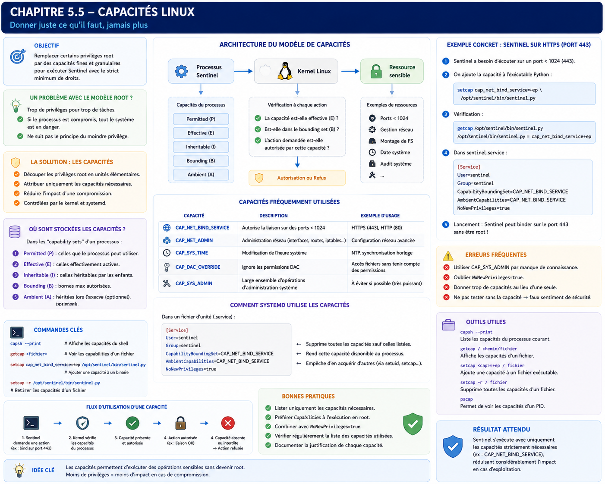

Chapitre 5.5 — Les capacités Linux
Campagne 5 — systemd et services
« Le problème n'a jamais été que root soit puissant. Le problème est qu'il était tout ou rien. »
Vous êtes ici
Partie I — Construire un socle sécurisé
Campagne 5 — systemd et les services
5.1 Comprendre systemd
5.2 Les unités (.service, .socket, .target…)
5.3 Créer le service Sentinel
5.4 Sandboxing systemd
► 5.5 Capacités Linux
5.6 Journalisation avec journald
5.7 Supervision et redémarrage automatique
5.8 Mission : rendre Sentinel résilient
Objectifs pédagogiques
À la fin de ce chapitre, vous serez capable de :
- comprendre pourquoi les capacités Linux ont été créées ;
- distinguer les privilèges root des capacités individuelles ;
- comprendre comment systemd manipule les capacités ;
- réduire les privilèges d'un service au strict minimum ;
- préparer Sentinel à fonctionner sans privilèges inutiles.
Pourquoi ce chapitre existe
Depuis le début de ce manuel, une idée revient régulièrement.
Un service ne doit posséder que les privilèges dont il a réellement besoin.
Nous avons déjà appliqué cette philosophie :
- avec les permissions UNIX ;
- avec
sudo; - avec Firewalld ;
- avec le sandboxing systemd.
Pourtant, il reste encore un problème historique. Pendant longtemps, Linux ne connaissait que deux catégories de processus.
ou
Il n'existait aucun juste milieu. Cette approche fonctionnait. Elle était pourtant extrêmement dangereuse. Pourquoi donner à une application tous les privilèges du système simplement parce qu'elle avait besoin... d'un seul ? Les capacités Linux répondent précisément à cette question.
Théorie détaillée
Le modèle historique
Pendant plusieurs décennies, Unix a utilisé un modèle extrêmement simple.
Tous les autres utilisateurs.
Cette approche avait le mérite d'être facile à comprendre. Elle présentait cependant une faiblesse majeure. Prenons un serveur Web. Pourquoi fonctionne-t-il parfois en tant que root ? Pas parce qu'il doit modifier le système. Pas parce qu'il doit gérer les utilisateurs. Pas parce qu'il doit charger un module noyau. Il lui fallait simplement ouvrir un port inférieur à : 1024 Pour cette unique opération, on lui accordait pourtant l'ensemble des privilèges administrateur.
Un exemple concret
Prenons Sentinel. Supposons que demain, l'entreprise décide d'écouter sur : 443/TCP Le port HTTPS classique. Sans capacités Linux, deux choix existent. Premier choix.
Exécuter Sentinel
en root.
Deuxième choix. Changer le port. Le premier choix augmente fortement le risque. Le second n'est pas toujours possible. Les capacités Linux apportent une troisième solution.
Découper root
L'idée est élégante. Au lieu de considérer que root possède un pouvoir indivisible, Linux découpe ses privilèges en plusieurs capacités indépendantes. Par exemple. CAP_NET_BIND_SERVICE Autorise l'ouverture d'un port privilégié. CAP_SYS_TIME Autorise la modification de l'heure système. CAP_SYS_MODULE Autorise le chargement de modules noyau. CAP_SYS_ADMIN Autorise de très nombreuses opérations d'administration. Chaque capacité représente une autorisation bien précise.
Le noyau peut alors accorder uniquement celles qui sont réellement nécessaires.
Une nouvelle vision
Avant.
Aujourd'hui.
Nous passons donc d'un modèle binaire à un modèle beaucoup plus fin.
Les cinq ensembles de capacités
Pour comprendre réellement leur fonctionnement, il faut savoir qu'un processus ne possède pas une simple liste de capacités. Le noyau Linux manipule plusieurs ensembles (Capability Sets). Les principaux sont :
- Permitted
- Effective
- Inheritable
- Bounding
- Ambient
Cette architecture peut sembler complexe. Pourtant, chaque ensemble répond à un problème précis. Nous allons les étudier progressivement.
Le jeu "Permitted"
Le jeu Permitted contient les capacités que le thread peut rendre effectives ou transmettre selon les règles du noyau. Une capacité absente ne peut pas être simplement réactivée par le programme courant. Une transition execve() vers un fichier privilégié peut toutefois recalculer cet ensemble ; c'est le Bounding Set, combiné aux capacités du fichier et aux autres règles de sécurité, qui plafonne alors ce qui peut être acquis.
Le jeu "Effective"
Posséder une capacité ne signifie pas nécessairement qu'elle est actuellement active. Le jeu Effective représente les capacités que le noyau consulte lors d'un contrôle de permission. Il est normalement un sous-ensemble de Permitted : Permitted autorise l'activation, Effective indique ce qui est actif maintenant.
Le jeu "Inheritable"
Le jeu Inheritable participe au calcul des capacités après execve(). Il ne signifie pas qu'un enfant reçoit automatiquement toutes les capacités de son parent : les capacités déclarées sur le fichier exécuté et les règles de transformation du noyau interviennent également. Ce jeu est surtout rencontré dans des chaînes d'exécution avancées ; le connaître évite de confondre héritage de processus et héritage de privilèges.
Le jeu "Ambient"
Le jeu Ambient, disponible depuis Linux 4.3, permet de conserver certaines capacités lors de l'exécution d'un programme non privilégié. Une capacité ne peut y entrer que si elle est déjà à la fois Permitted et Inheritable. À l'execve(), elle rejoint les jeux Permitted et Effective du nouveau programme ; l'exécution d'un binaire setuid, setgid ou doté de capacités de fichier efface ce jeu. La directive systemd AmbientCapabilities= automatise cette préparation pour un service.
Le jeu "Bounding"
Voici probablement le plus important pour nous. Le Bounding Set limite les capacités qu'un thread pourra acquérir au cours d'un futur execve(). Une capacité retirée ne peut pas être réajoutée par ce thread et cette réduction est héritée par ses descendants. systemd utilise ce mécanisme avec :
CapabilityBoundingSet=
Une analogie
Imaginons une entreprise. Le Permitted Set correspond aux badges que vous pouvez activer, le Effective Set au badge utilisé maintenant, l'Inheritable Set aux droits susceptibles de participer à une transition, l'Ambient Set au badge conservé lors d'un changement de programme non privilégié, et le Bounding Set aux bâtiments définitivement exclus de votre parcours. L'analogie simplifie les règles du noyau, mais permet de mémoriser le rôle distinct de chaque ensemble.
Pourquoi est-ce important ?
Reprenons Sentinel. Supposons qu'il n'ait besoin que de : CAP_NET_BIND_SERVICE Nous pouvons retirer toutes les autres capacités. Même si un attaquant compromet le service, il ne pourra pas soudainement obtenir : CAP_SYS_MODULE ou CAP_SYS_ADMIN Le noyau refusera. Encore une fois, nous supprimons des possibilités d'attaque.
Observer les capacités
Linux fournit plusieurs outils. Par exemple.
capsh --print
Cette commande affiche :
- les capacités effectives ;
- les capacités autorisées ;
- les capacités héritées.
Autre possibilité.
getpcaps PID
où PID représente le processus étudié. Ces commandes sont très utiles lors des audits.
Les capacités des fichiers
Une capacité peut également être directement attachée à un fichier. Par exemple.
setcap cap_net_bind_service=+ep /opt/sentinel/bin/sentinel
Désormais, ce binaire peut ouvrir un port privilégié sans être exécuté en tant que root. Cette approche remplace certains anciens usages du bit setuid.
Attention aux capacités sur les fichiers
Les capacités associées aux fichiers doivent cependant être utilisées avec prudence. Elles sont stockées dans un attribut étendu du fichier : une copie ou un remplacement peut les perdre, tandis qu'un binaire modifiable par une personne non autorisée transformerait la capacité en vecteur d'élévation. Les scripts interprétés et les systèmes de fichiers qui ne conservent pas ces attributs ajoutent encore des subtilités. Dans une infrastructure moderne, on préfère souvent laisser systemd gérer directement les capacités du service. Cette approche est :
- plus lisible ;
- plus centralisée ;
- plus facile à auditer.
Nous verrons précisément comment dans la suite du chapitre.
Les capacités dans systemd
Jusqu'à présent, nous avons étudié les capacités du point de vue du noyau Linux. Voyons maintenant comment systemd les exploite. L'objectif est simple. Donner à Sentinel exactement les privilèges nécessaires. Pas un de plus.
AmbientCapabilities
La directive la plus utilisée est :
AmbientCapabilities=
Elle permet de transmettre explicitement certaines capacités au processus lancé. Prenons Sentinel. Supposons qu'il doive écouter sur : 443/TCP sans être exécuté en tant que root. L'unité devient alors :
[Service]
User=sentinel
AmbientCapabilities=CAP_NET_BIND_SERVICE
Le résultat est remarquable.
Nous obtenons exactement le comportement recherché.
CapabilityBoundingSet
Nous avons déjà rencontré le Bounding Set. systemd permet de le modifier très simplement. Prenons un exemple.
CapabilityBoundingSet=CAP_NET_BIND_SERVICE
Que signifie cette ligne ? Toutes les autres capacités disparaissent définitivement. Même si Sentinel exécutait un autre programme, celui-ci ne pourrait jamais récupérer :
CAP_SYS_ADMINCAP_SYS_MODULECAP_SYS_PTRACE- etc.
Le noyau les considère comme définitivement interdites. Cette directive constitue donc une excellente mesure de réduction de la surface d'attaque.
Combiner les deux directives
Dans la pratique, les deux directives sont souvent utilisées ensemble.
AmbientCapabilities=CAP_NET_BIND_SERVICE
CapabilityBoundingSet=CAP_NET_BIND_SERVICE
La première : accorde la capacité. La seconde : interdit toutes les autres. Le résultat est particulièrement lisible. L'unité décrit exactement les privilèges accordés au service.
SecureBits
Les SecureBits constituent un mécanisme plus avancé. Ils permettent de contrôler certains comportements historiques liés aux privilèges root. Par exemple :
SecureBits=keep-caps
ou
SecureBits=no-setuid-fixup
Ces options répondent à des cas très particuliers. Dans la majorité des applications métiers, elles ne sont pas nécessaires. Il est néanmoins utile de connaître leur existence, notamment lors de l'analyse d'unités complexes.
Les capacités et NoNewPrivileges
Nous avons étudié précédemment :
NoNewPrivileges=yes
Une question naturelle apparaît. Est-il compatible avec les capacités ? La réponse est oui. Les capacités accordées au lancement du service restent disponibles. En revanche, le processus ne pourra plus en acquérir de nouvelles ultérieurement. Cette combinaison est particulièrement intéressante.
AmbientCapabilities=CAP_NET_BIND_SERVICE
NoNewPrivileges=yes
Le service possède uniquement la capacité prévue, et ne pourra jamais en obtenir d'autres.
Les capacités et SELinux
Il est important de rappeler que les capacités ne remplacent jamais SELinux. Prenons un exemple. Sentinel possède : CAP_NET_BIND_SERVICE Cela signifie uniquement :
Tu peux ouvrir un port privilégié.
En revanche, si la politique SELinux interdit l'ouverture de ce port, l'opération échouera malgré tout. Autrement dit, les capacités répondent à la question : Le noyau autorise-t-il cette opération ? SELinux répond ensuite à une autre :
Cette opération est-elle autorisée
dans ce contexte de sécurité ?
Les deux contrôles se complètent.
Les capacités et Firewalld
Même logique. Sentinel peut parfaitement posséder : CAP_NET_BIND_SERVICE et écouter sur : 443/TCP Si Firewalld bloque ce port, aucune connexion n'arrivera jusqu'à lui. Nous retrouvons encore une fois le principe de défense en profondeur. Chaque couche répond à une question différente.
Les capacités et Podman
La même philosophie existe dans Podman. Un conteneur peut être lancé avec :
--cap-drop ALL
puis :
--cap-add NET_BIND_SERVICE
Le raisonnement est exactement identique. Nous retirons tout. Puis nous réintroduisons uniquement les privilèges indispensables. Vous remarquerez que les technologies étudiées dans ce manuel convergent toutes vers la même idée.
- Linux Capabilities
- systemd
- Podman
- Kubernetes
Toutes privilégient aujourd'hui une approche minimaliste des privilèges.
Un exemple complet
Imaginons que Sentinel écoute sur HTTPS. Une unité raisonnablement sécurisée pourrait ressembler à ceci.
[Service]
User=sentinel
Group=sentinel
AmbientCapabilities=CAP_NET_BIND_SERVICE
CapabilityBoundingSet=CAP_NET_BIND_SERVICE
NoNewPrivileges=yes
ProtectSystem=strict
ProtectHome=yes
PrivateTmp=yes
Observons ce que cela signifie réellement.
| Action depuis Sentinel | Résultat | Mécanisme principal |
|---|---|---|
| ouvrir le port TCP 443 | autorisé | CAP_NET_BIND_SERVICE |
| charger un module noyau | refusé | CapabilityBoundingSet |
| accéder aux répertoires personnels | refusé | ProtectHome |
| acquérir un nouveau privilège | refusé | NoNewPrivileges |
| modifier les répertoires système | refusé | ProtectSystem |
Nous sommes très loin du modèle historique consistant à exécuter le service en root.
Une évolution progressive de Sentinel
Reprenons le fil conducteur du manuel. Au début de la formation, Sentinel était lancé ainsi.
python sentinel.py
Puis il est devenu :
Puis : Sandbox systemd Nous ajoutons maintenant une nouvelle couche. Capacités Linux L'architecture devient progressivement :
Chaque chapitre ajoute une barrière supplémentaire. Aucune n'est parfaite. Ensemble, elles construisent une défense cohérente.
Les capacités ne remplacent jamais une bonne conception
Une erreur consiste à penser :
Grâce aux capacités Linux, je peux désormais donner davantage de privilèges à mon application.
La bonne réflexion est exactement inverse. Les capacités permettent de retirer des privilèges qui auraient autrefois nécessité root. Elles servent donc avant tout à simplifier le principe du moindre privilège. Un ingénieur sécurité doit toujours se poser cette question :
Puis-je retirer encore une capacité sans casser mon application ?
Si la réponse est oui, alors cette capacité ne devrait probablement pas être présente.
Approfondissement
Les capacités Linux sont un découpage de l'autorité, pas une réduction de sécurité
Lorsque les Linux Capabilities ont été introduites (Linux 2.2), beaucoup d'administrateurs ont cru qu'elles avaient été créées pour « remplacer root ». Ce n'est pas exact. Elles ont été créées pour décomposer l'autorité de root. Historiquement, root possédait plusieurs dizaines de privilèges totalement indépendants :
- modifier l'heure ;
- monter un système de fichiers ;
- ouvrir un port privilégié ;
- manipuler les interfaces réseau ;
- charger un module noyau ;
- lire n'importe quel fichier ;
- changer les UID ;
- effectuer un
ptrace()sur un autre processus.
Ces opérations n'ont aucun rapport entre elles. Pourtant, pendant des décennies, elles étaient toutes accordées en bloc. Les capacités Linux cassent ce modèle. Aujourd'hui, lorsqu'un ingénieur lit :
AmbientCapabilities=CAP_NET_BIND_SERVICE
il ne voit pas seulement une directive systemd. Il lit en réalité :
"J'autorise explicitement Sentinel à ouvrir un port privilégié, mais je refuse de lui donner toute autre capacité d'administration."
Cette nuance est fondamentale.
Le Bounding Set est souvent plus important que les capacités accordées
Beaucoup d'administrateurs regardent uniquement :
AmbientCapabilities=
En réalité, lors d'un audit sécurité, un expert commence presque toujours par examiner :
CapabilityBoundingSet=
Pourquoi ? Parce qu'il définit le plafond absolu. Prenons deux unités.
Première unité
AmbientCapabilities=CAP_NET_BIND_SERVICE
Sans Bounding Set. Un développeur modifie plus tard l'application. Elle lance un autre programme. Ce nouveau programme peut éventuellement récupérer d'autres capacités encore disponibles. Deuxième unité.
AmbientCapabilities=CAP_NET_BIND_SERVICE
CapabilityBoundingSet=CAP_NET_BIND_SERVICE
Le noyau sait désormais qu'aucune autre capacité n'existera. Même après plusieurs execve() successifs. La différence paraît subtile. Elle est pourtant énorme lors d'une compromission.
Une capacité inutile est une vulnérabilité potentielle
Imaginons une unité contenant :
AmbientCapabilities=
CAP_NET_BIND_SERVICE
CAP_SYS_TIME
CAP_SYS_ADMIN
CAP_SYS_BOOT
Supposons que Sentinel n'utilise réellement que : CAP_NET_BIND_SERVICE Les trois autres capacités deviennent immédiatement suspectes. Pourquoi sont-elles présentes ? Qui les a demandées ? Sont-elles documentées ? Ont-elles été testées ? Dans une infrastructure mature, chaque capacité doit posséder une justification technique clairement identifiée. L'absence de justification est souvent considérée comme une anomalie de sécurité.
Concevoir la politique
Un architecte ne réfléchit jamais en termes de privilèges disponibles. Il raisonne en termes de fonctionnalités minimales nécessaires. Prenons Sentinel. Ses besoins réels sont :
- écouter sur HTTPS ;
- lire sa configuration ;
- écrire ses journaux ;
- communiquer avec FreeIPA ;
- communiquer avec ses agents.
Rien de plus. L'architecte construit alors une unité qui traduit exactement ces besoins. Tout le reste disparaît.
Les privilèges doivent être documentés
Dans certaines entreprises, chaque capacité accordée possède une justification. Exemple.
Quelques mois plus tard, Sentinel migre vers : 8443/TCP La justification disparaît. La capacité est retirée. L'unité évolue naturellement avec l'application.
Concevoir pour le futur
Une bonne architecture anticipe également les évolutions. Aujourd'hui, Sentinel écoute peut-être directement sur : 443 Demain, un reverse proxy Nginx ou HAProxy prendra cette responsabilité. Sentinel écoutera uniquement sur : 8443 L'architecte pourra alors supprimer complètement : CAP_NET_BIND_SERVICE La politique de sécurité s'améliore automatiquement.
Point de vue offensif
Après avoir obtenu une exécution de code, l'attaquant cherche immédiatement à répondre à une question.
Quels privilèges possède réellement ce processus ?
Il va souvent commencer par :
capsh --print
ou
getpcaps $$
Pourquoi ? Parce que ces informations lui indiquent immédiatement :
- quelles attaques sont possibles ;
- lesquelles sont impossibles.
Un processus possédant : CAP_SYS_ADMIN devient immédiatement beaucoup plus intéressant. À l'inverse, un processus limité à : CAP_NET_BIND_SERVICE offre très peu d'opportunités supplémentaires.
L'escalade de privilèges
Une grande partie des attaques modernes repose sur une idée simple. Obtenir progressivement davantage de privilèges. Les capacités Linux compliquent fortement cette stratégie. Pourquoi ? Parce qu'elles rendent les privilèges explicitement visibles. L'attaquant découvre rapidement que :
Le noyau ne lui permettra jamais de l'obtenir.
En entreprise
Dans une infrastructure professionnelle, les capacités sont généralement définies dans des modèles d'unités. Exemple. SERVICE WEB ↓ CAP_NET_BIND_SERVICE
Les développeurs n'ajoutent pratiquement jamais eux-mêmes des capacités. Ils utilisent un profil validé par l'équipe sécurité. Chaque nouvelle capacité fait l'objet :
- d'une justification ;
- d'une revue ;
- d'un audit.
Culture technique
Il existe aujourd'hui une quarantaine de capacités Linux. Certaines sont très spécialisées. Par exemple : CAP_BPF permet certaines opérations liées au sous-système eBPF. CAP_CHECKPOINT_RESTORE a été introduite pour faciliter les mécanismes de checkpoint/restore des processus. À l'inverse, certaines capacités historiques, comme : CAP_SYS_ADMIN sont devenues tellement vastes qu'elles sont parfois surnommées :
The new root.
Lorsqu'une unité contient : CAP_SYS_ADMIN un auditeur sécurité considère généralement cela comme un signal d'alerte. Cette capacité donne accès à un très grand nombre d'opérations d'administration. Il convient de l'éviter autant que possible.
Piège classique
Conserver CAP_SYS_ADMIN "au cas où"
Il arrive qu'un développeur ajoute :
AmbientCapabilities=CAP_SYS_ADMIN
simplement parce qu'il ne sait pas précisément quelle capacité est nécessaire. Cette pratique est extrêmement dangereuse. Elle revient pratiquement à recréer le modèle historique de root. La bonne démarche consiste toujours à :
- identifier précisément le besoin ;
- rechercher la capacité correspondante ;
- supprimer toutes les autres.
Une capacité "temporaire" oubliée en production peut devenir plusieurs années plus tard un véritable problème de sécurité.
TP 1 — Observer et accorder une capacité minimale
Objectif
Comprendre concrètement l'effet des capacités Linux sur un service systemd et apprendre à réduire progressivement les privilèges de Sentinel.
Étape 1 — Observer les capacités du système
Afficher les capacités du shell courant.
capsh --print
Identifier notamment :
- Effective ;
- Permitted ;
- Bounding.
Comparer ensuite avec :
getpcaps $$
Comprendre pourquoi les informations ne sont pas exactement présentées de la même manière.
Étape 2 — Faire écouter Sentinel sur 443
Configurer Sentinel pour écouter sur : 443/TCP Créer ensuite une unité contenant :
AmbientCapabilities=CAP_NET_BIND_SERVICE
Vérifier que le service démarre correctement sous l'utilisateur : sentinel sans utiliser root.
TP 2 — Vérifier le plafond et les interactions
Étape 3 — Restreindre le Bounding Set
Ajouter :
CapabilityBoundingSet=CAP_NET_BIND_SERVICE
Redémarrer le service. Vérifier qu'il fonctionne toujours. Observer ensuite les capacités du processus avec :
getpcaps <PID>
Étape 4 — Comparer avec un lancement manuel
Lancer Sentinel directement. Puis :
getpcaps <PID>
Comparer les deux approches :
- lancement manuel ;
- lancement via systemd.
Identifier les différences de privilèges.
Étape 5 — Vérifier la cohérence avec le sandboxing
Conserver :
NoNewPrivileges=yesProtectSystem=strictProtectHome=yes
Ajouter les capacités étudiées. Vérifier que toutes ces protections fonctionnent simultanément. L'objectif est de comprendre qu'elles ne se remplacent pas. Elles se complètent.
Mission d'ingénieur
Votre entreprise impose désormais une nouvelle règle :
Aucun service ne doit être exécuté avec plus de capacités que nécessaire.
Vous devez réaliser l'audit de dix services existants. Pour chacun, vous devrez produire :
- les capacités actuellement utilisées ;
- celles réellement nécessaires ;
- celles pouvant être supprimées ;
- les impacts fonctionnels éventuels ;
- les modifications à apporter aux unités systemd.
Votre rapport devra être suffisamment précis pour permettre une mise en production sans interruption de service.
Impact sur Sentinel
Sentinel fonctionne désormais avec une politique de privilèges extrêmement fine. Il ne possède plus :
- les privilèges de root ;
- des capacités inutiles ;
- des possibilités implicites d'élévation.
Il reçoit uniquement les autorisations strictement nécessaires à sa mission. Cette évolution complète naturellement les protections mises en place dans les chapitres précédents :
Chaque couche réduit encore un peu plus les conséquences d'une compromission.
Synthèse
- Les capacités Linux décomposent les privilèges historiquement détenus par root.
AmbientCapabilitiespermet d'accorder explicitement une capacité à un service.CapabilityBoundingSetdéfinit le plafond absolu des capacités disponibles.- Les capacités ne remplacent ni SELinux, ni Firewalld, ni le sandboxing : elles les complètent.
- Chaque capacité accordée doit être justifiée, documentée et régulièrement réévaluée.
CAP_SYS_ADMINdoit être considérée comme une capacité exceptionnelle et évitée autant que possible.- Le principe directeur reste toujours le même : retirer tout privilège dont l'application n'a pas besoin.
Schéma récapitulatif

Pour aller plus loin
Sentinel possède désormais le minimum de privilèges nécessaire. Il faut maintenant rendre son activité observable sans lui confier la rotation et le stockage de ses propres fichiers de logs.
← 5.4 — Sandboxing systemd · 5.6 — Journalisation avec journald →